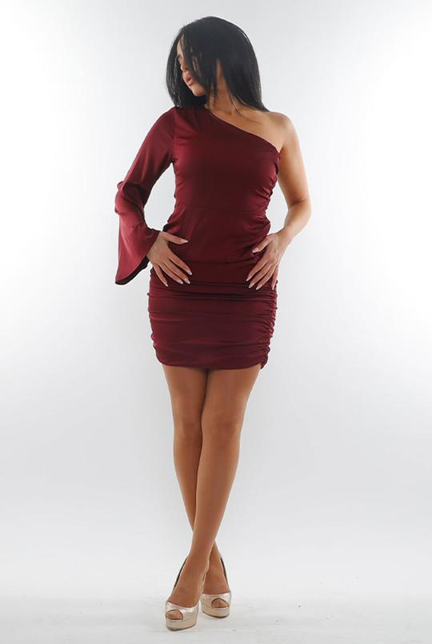
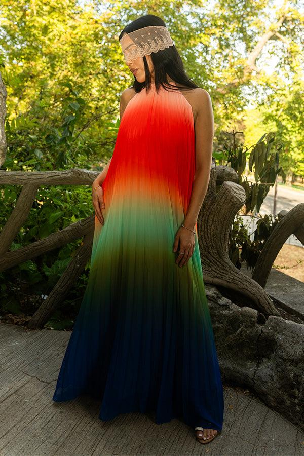

Orelle Azoulay
Cadre le besoin de la boutique, coordonne l'équipe et suit les étapes.
← → pour naviguer · Entrée : lecture vidéo · N : texte à dire · F : plein écran
Cas d'étude · Que Pour Elle
Groupe 3Orelle Azoulay · Jnaina Hakimi · Paolina Roiatti · Badis Bejaoui · Telina Ranaivoson Meliarison

À dire : bonjour, nous sommes le groupe 3. Notre cas d'étude : Que Pour Elle, et ses Reels Instagram montés par l'IA.
Cadre le besoin de la boutique, coordonne l'équipe et suit les étapes.
Conçoit le workflow n8n et connecte les outils entre eux.
Rédige et teste les consignes (prompts) envoyées aux IA.
Photographe et directeur de création, garant de l'identité de la marque.
Étudie le budget, les risques et les conditions de lancement du pilote.
À dire : cinq rôles, de la coordination à la création, en passant par l'automatisation, l'IA et la stratégie.
Que Pour Elle, shop de vêtements pour femmes à La Réunion. Aujourd'hui : ≈ 12 000 € par an de vidéaste, montage compris, et 1 h 30 de CM par Reel.

À dire : on garde les shootings et notre DA. L'IA peut-elle faire tout le montage, aussi bien et pour moins cher ?
L'IA ne crée pas l'image de la marque : elle monte nos rushes. Aucun modèle entraîné, aucune image générée.
À dire : shooting avec notre DA, l'IA monte les rushes de A à Z, GPT rédige la légende, Claude contrôle, la CM décide.
GENERATE→CONTENT_READYouREVIEW→READY→PUBLIÉ · OFFÀ dire : prototype n8n réel, en mode préparation. GPT rédige, Claude contrôle, la CM valide. La publication automatique est coupée.
API GPT-5.5 pour rédiger, API Claude Sonnet 5.5 pour contrôler. Pas d'abonnement perso (Claude Pro, ChatGPT Plus) : pas d'API.
Montage IA : CapCut Pro, Descript à comparer. n8n Cloud (Europe) et Google Sheets pour la légende.
Les rushes autorisés et le calendrier seulement. Aucune donnée cliente. Publication coupée.
Vigilance orange : possible si les contrats, les accès et l'usage sont validés.
À dire : pas d'abonnement perso, il faut les API. GPT rédige, Claude contrôle : deux éditeurs, deux contrats. Outil de montage : conditions à relire. Publication coupée. Vigilance orange.
Mannequins reconnaissables : contrats à vérifier. Seul un dossier « rushes autorisés » part au montage.
Contrat de traitement, conservation, région, sous-traitants, consommation publiée.
AI Act : déployeur, risque minimal, transparence depuis le 2 août 2026. Prix faux = pratique trompeuse. Validé par un juriste.
Biais : le casting et les rushes sont choisis par l'équipe, pas par l'IA. La CM suit chaque mois les tailles et morphologies mises en avant.
À dire : contrats des mannequins, questions aux fournisseurs, AI Act (déployeur, risque minimal, transparence), validation par un juriste.
Vidéaste tournage + montage ≈ 12 000 €, shootings ≈ 4 500 €.
Vidéaste tournage seul ≈ 7 200 €, shootings ≈ 4 500 €, abonnements ≈ 520 €.
économisés par an, + 72 h libérées pour la CM. Si le montage IA vaut celui du vidéaste.
Les shootings restent : c'est notre DA. Alternative sans IA à comparer : la CM monte elle-même avec des modèles CapCut.
À dire : vidéaste 12 000 € → 7 200 € sans le montage, shootings inchangés (4 500 €), 520 € d'abonnements. ≈ 4 280 € économisés par an, + 72 h de CM.
On suspend si :
La CM bloque un Reel. La gérante arrête le système.
À dire : risque n°1, un prix faux. Risque n°2, un montage hors DA. Une erreur publiée ou 3 refus de suite = suspension.
Le temps réel d'un Reel aujourd'hui, sur 3 essais, corrections comprises.
Montage IA contre montage du vidéaste, mêmes rushes, à l'aveugle. Grille fixée avant.
Devis du vidéaste pour un tournage seul, contrats des mannequins, conditions de l'outil de montage.
Si le montage de l'IA ne vaut pas celui du vidéaste, nous le dirons. C'est aussi une bonne conclusion.
À dire : un test encadré, pas un déploiement. On mesure, on compare, on fait valider. Si l'IA ne fait pas mieux, on le dira.